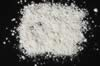

|
|
(For further information on spectroscopy, see:
http://speclab.cr.usgs.gov)
TITLE: Kaolinite GDS11 DESCRIPT
DOCUMENTATION_FORMAT: MINERAL
SAMPLE_ID: GDS11
MINERAL_TYPE: Phyllosilicate
MINERAL: Kaolinite (Kaolinite-Serpentine group)
FORMULA: Al2Si2O5(OH)4
FORMULA_HTML: Al2Si2O5(OH)4
COLLECTION_LOCALITY: unknown
ORIGINAL_DONOR: Wards Natural Science
CURRENT_SAMPLE_LOCATION: USGS Denver Spectroscopy Laboratory
ULTIMATE_SAMPLE_LOCATION: USGS Denver Spectroscopy Laboratory
SAMPLE_DESCRIPTION:
Polymorphous with Dickite, Halloysite and Nacrite.
A spectrum for this sample was published by:
Clark, R.N. and P.G. Lucey, 1984, Spectral Properties of Ice-Particulate Mixtures and Implications for Remote Sensing I: Intimate Mixtures: J. Geophys. Res., 6341-6348.
Dry sieved to less than 63 µm. The mean grain size is 10-20 µm according to Clark and Lucey (1984), but is probably closer to 10 µm. From the visible-near-IR spectrum, the kaolinite appears spectrally pure.
IMAGE_OF_SAMPLE:

END_SAMPLE_DESCRIPTION.
XRD_ANALYSIS:
Kaolinite + anatase (Norma Vergo, USGS)
END_XRD_ANALYSIS.
COMPOSITIONAL_ANALYSIS_TYPE: None # XRF, EM(WDS), ICP(Trace), WChem
COMPOSITION_TRACE:
COMPOSITION_DISCUSSION:
END_COMPOSITION_DISCUSSION.
MICROSCOPIC_EXAMINATION:
END_MICROSCOPIC_EXAMINATION.
SPECTROSCOPIC_DISCUSSION:
END_SPECTROSCOPIC_DISCUSSION.
SPECTRAL_PURITY: 1b2b3b4_ # 1= 0.2-3, 2= 1.5-6, 3= 6-25, 4= 20-150 microns
| LIB_SPECTRA_HED: | where | Wave Range | Av_Rs_Pwr | Comment |
|---|---|---|---|---|
| LIB_SPECTRA: | splib04a r 2574 | 0.2-3.0µm | 200 | g.s.= 0.001cm |
| LIB_SPECTRA: | splib05a r 3949 | 0.2-3.0µm | 200 | g.s.= |
| LIB_SPECTRA: | splib06a r 12060 | g.s.= | ||
| LIB_SPECTRA: | splib06a r 12072 | g.s.= |
{kind=link}